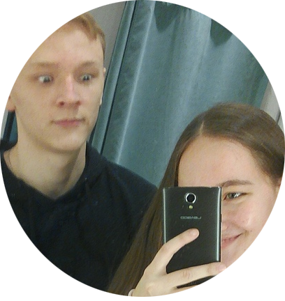

Профессиональная модель Владимир о своей профессии
Как правило, в модели идут парни с ростом от 180 сантиметров, парню же с небольшим ростом попасть в модельный бизнес куда сложнее. Для этого нужно обладать либо уникальными внешними данными, либо через постель))).

VLADIMIR
Я была на том мосту, на котором Марина погибла.
— Зачем ты туда поперлась?
— Не знаю, ноги сами привели. Я стою и вдруг понимаю, что человек на такое способен от отчаяния...
— Полинка, ты меня пугаешь, выбрось это из головы!
— Конечно. Мы ведь с тобой красавицы Вова . И работаем красавицами. Значит, никто не должен видеть наших слез.
‘‘